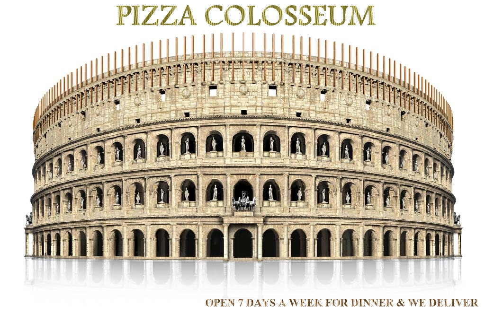

| 1 | 100g | Caprese mozzarella, rajské, bazalka, balsamico mozzarella, tomatoes, pesto, basilicum, balsamico | 79,- |
| 2 | 100g | Peperoni marinati con feta fresco grilované a marinované papriky s čerstvým feta sýrem a zelenými olivami, bazalka grilled red paprika with fresch feta cheese and olives, basilicum | 100,- |
| 3 | 100g | Pomodoro e gorgonzola salsa calda rajské plněné teplou gorgonzolovou omáčkou, toast tomatoes with hot gorgonzola sauce, toast |
100,- |
| 4 | 70g | Carpaccio marinované plátky z hovězí svíčkové, čerstvý parmezán, rukola, olivový olej marined beef fi lets, fresch parmesan cheese, rucola, olive oil | 159,- |